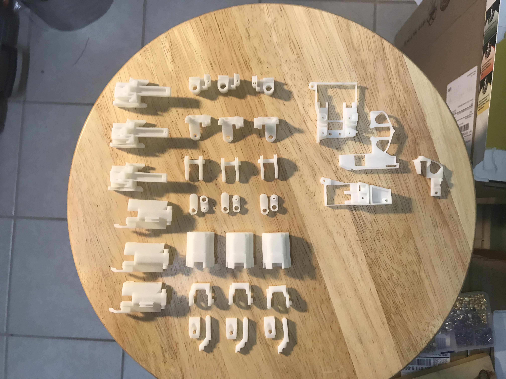

As you can see, it's not quite finished — the circuit boards are exposed and some of the wires need terminating — but aside from that this is the final form factor for the glove. To stop the glove from popping off the back of my hand (like in the video) we're making straps to go around the user's palm and wrist. Keep scrolling for some additional photos of the glove, or
click here to read more about the technical details of the glove.
Our glove measures 13 joints on the hand (none on the pinky unfortunately) and 3 angular coordinates for the palm. In addition, it provides users with tactile feedback (
vibration + skin stretch). You can see a tactile module on the thumb in the picture above. We've also made tactile modules for the other fingers, but those modules are detachable so they're not shown here — it's a feature not a bug!
We're pretty happy with this version of the glove and can't wait to deliver it to our beta testers. They're all artist-types who are ok with the unpolished look of the product. In fact, the hacker nature of it is one of the things they find most appealing! Our next version will be much more consumer friendly, and will include global position tracking, force feedback, and a suite of software products that let users unleash their creativity.
